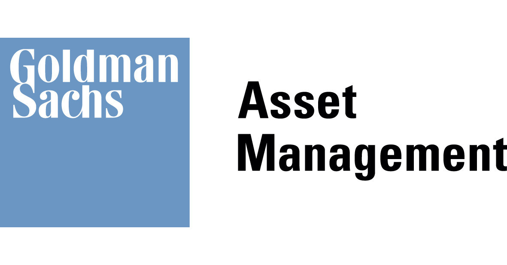

Created a simplified model of a complicated portfolio strategy

I was on the Direct Indexing team, a complicated strategy allowing investors to customize portfolios to support value investing. The strategy takes advantage of market volatility to lock in returns through a business cycle. I spent the summer using MATLAB to optimize low-carbon portfolios that avoid utilities and energy companies. To enable financial advisors to demonstrate the strategy, I created an Excel tool that simulates performance given many parameters.
When attending calls with financial advisors to promote the strategy, I heard repeated questions about how different assumptions would change the historical performance. Many did not understand the unintuitive way the strategy locks in returns.
I had ample background teaching as an Undergraduate Learning Advisor, and I like making educational tools, so I offered to contribute to the informational materials we distribute.
I first started making a presentation, but the description of all the parameters got very complicated. I wanted to use Python but realized that the end users had little coding experience.
In the end, I decided to make an Excel sheet with easily modifiable parameters that used VBA to simulate a stochastic process that approximated returns.
Before the summer ended during this internship, financial advisors had already begun using the tool I created with their end clients. This simulation tool was the first coding project I had completed in VBA and I learned how to apply stochastic calculus and optimization theory in code for the first time, skills I have used in modelling many times since.